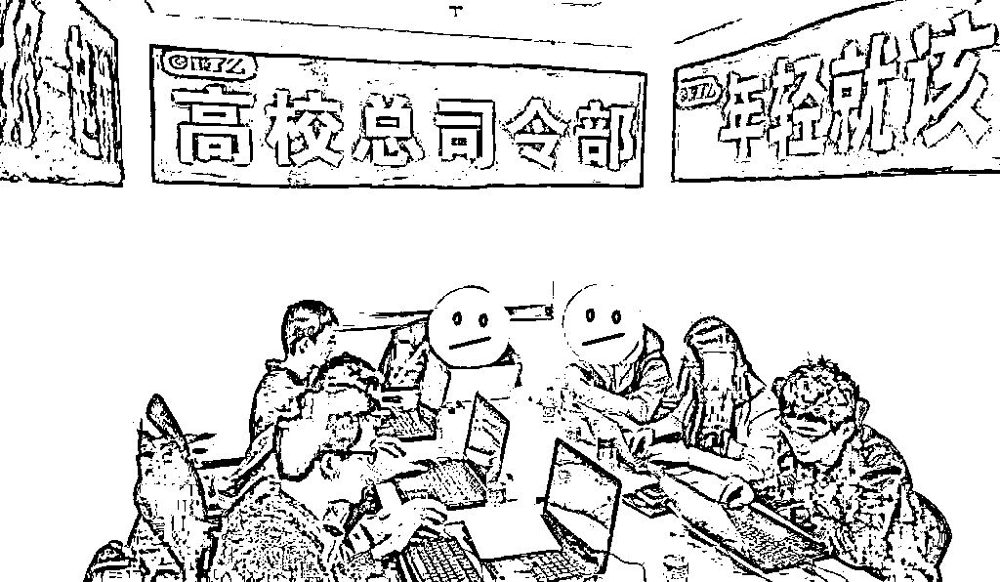
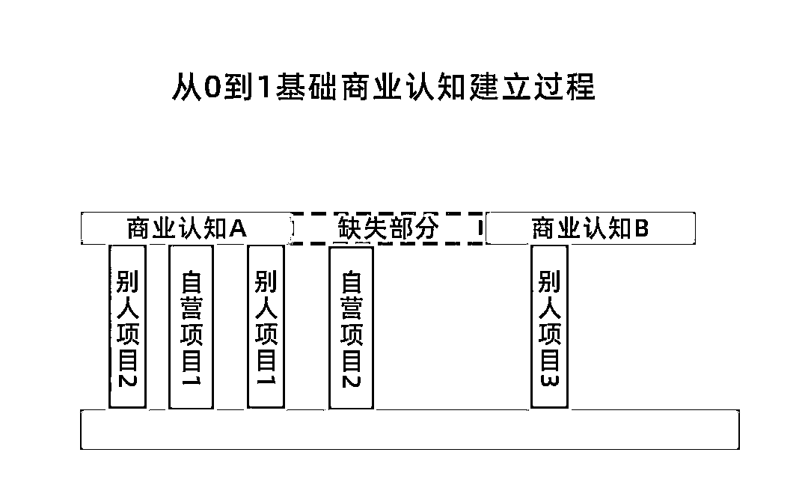
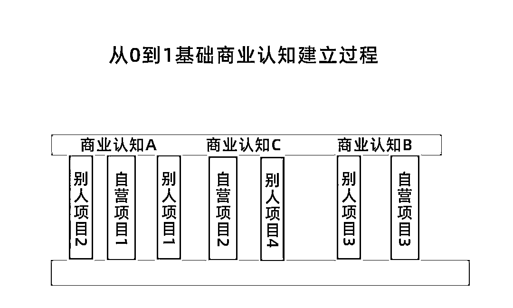
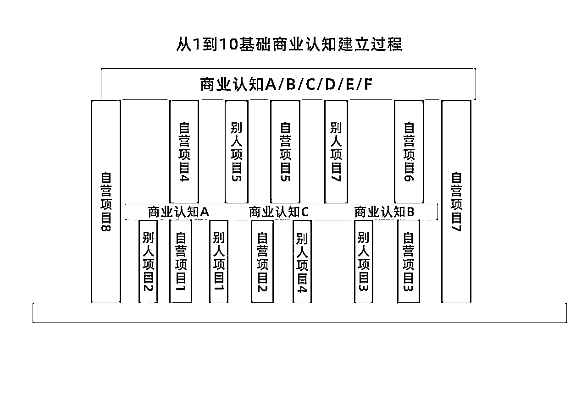
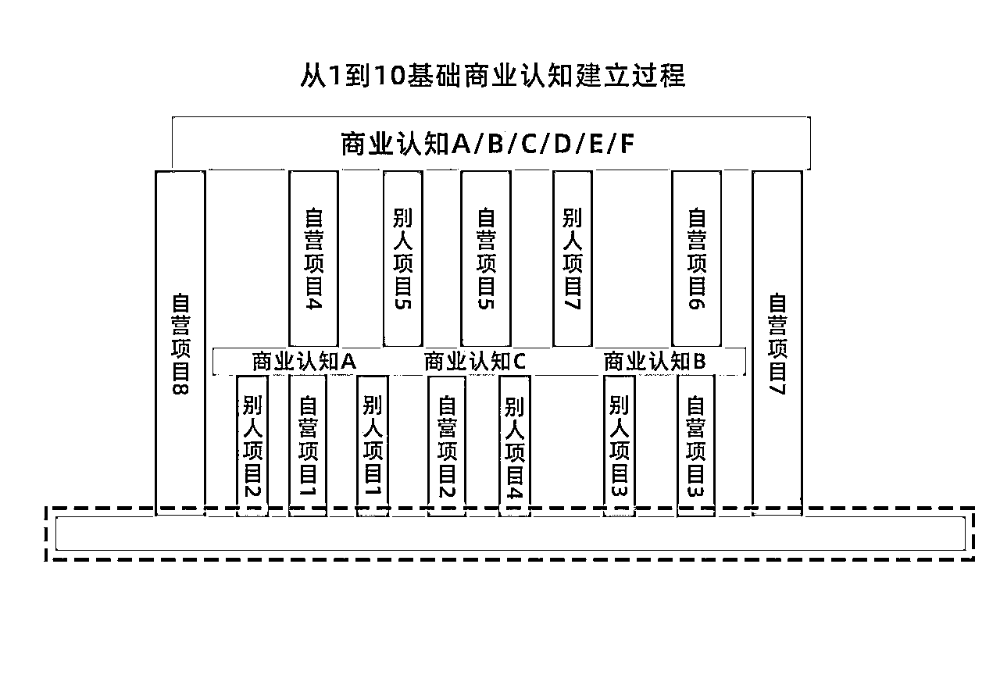

来源：https://u16gtzbrexc.feishu.cn/docx/BRkQdj7rRoFOF6xBPRmc0n5MnDh
这几年一直在创业的一线，越来越感觉生意难做了。17年有一个信息，再找行业内的人请教下，就可以做一个项目一两年，竞争对手才慢慢反应过来。
从23年开始，团队能力和项目要求要完美匹配才有可能成功做起来一个项目，项目收益和团队能力呈现正相关，收益出现明显分层，有10W的能力只能做10W的项目。
接下来生意比拼的是综合维度！我总结下来就是老板的商业认知，团队的综合能力，以及项目是否有机会窗口。机会都是留给有准备的人的！不断提升商业认知和团队能力就是准备工作。
那么这些年，我从一个月薪4000的员工做到现在，商业认知，项目经验到底有哪些变化，这篇文章详细探讨，希望能够抛砖引玉！
首先，和大家说说我的商业成长经历，让大家有个体感。
我大学毕业第一份工作是饿了么BD，跑市场，谈商家，发传单都做过，实习期底薪4000+绩效。然后公司架构调整，我和北京分公司老大一起去总部，岗位是政策研究办公室委员，1个老大+6个委员管理全国的高校外卖市场。变成底薪6000+绩效。

干了一年多积累了一些经验，16年底回河北独立发展。当时独立发展还不知道干嘛，所以就找了份工作，骑驴找马，16年底副业做今日头条，过年前一个月能够做到1万以上的利润。然后我觉得这是个机会。就找了办公场地，开公司。
17年做了今日头条，中间也摸索了好久，一个月亏损三四万，当时想的是手上的钱亏完，大不了再去上班。不过，皇天不负有心人，经过几次调整，从17年7月份爆发到18年7月份，挣到人生的第一个百万。然后买房装修，又没钱了。整个项目由于今日头条，百家号平台收缩广告分成收益，导致整个项目利润率严重下滑。到18年底，一个员工只能挣出自己的工资，老板是亏损的，最后关停项目。
19年到2021年期间尝试过很多项目，抖音短视频、抖音直播、微视、咸鱼无货源、淘宝开店等等，其中，做婴幼儿奶粉私域让我重新做出来一个月5-7万利润的项目。
2021年到2023年，我一直做的抖音直播带货，其中也做过自然流、付费流、染发膏、老花镜、零食、百货、铁锅、园艺等多个行业的直播间，估计在我手上注销的抖音号也有几百个了。有的就是亏损，有的就是只能月入一两万，有的就是一做就很顺利，园艺直播间我们也做到了单直播间年利润100W。
包括现在我们做的大健康类的内容型直播间，也是在多次尝试、调整以后才做到月百万级的变现。
这是我这些年做项目的一些缩影。我在其中不断的反思，总结，同样是我，同样是做项目，为什么会有很大的差别，刚开始做5个项目可能都成不了一个，近一年做项目没有亏损的。其中的区别到底是什么呢，本篇文章给大家分享作为一个独立创业的项目负责人，我的商业认知、方法论和实操技能是怎么积累起来的。
一个项目从得到信息，调研分析，到项目立项，开始实操项目，到最后做起来或者放弃，其中的整个环节就是，商业认知——项目方法论——项目实操技能三者的统一结合。
商业认知、项目方法论，以及具体的项目实操经验到底是什么样的关系。我的商业成长路径是什么样的。用这张图表示，最开始的我是什么情况。

我刚开始也是小白一个，没有任何经验，没有任何阅历，做的项目也很少，对商业只有部分认知，在自己一点点学习，一点点实操的过程中才逐渐积累一些认知。
但是你会发现，自己想无懈可击，干进去漏洞百出，眼睁睁看着别人做起来，自己干就是问题不断，你是不是也有这种经历？由于整体的商业认知不全面不完整，所以在做项目的时候，分析不全面，自身技能也不足，导致商业认知碎片化，项目经验很少。

当你做过几个项目，在反思成败的过程中会逐渐看到一个项目的全貌。这样一个基本的月入过万的商业认知，就有了做起来一个项目的基础能力！
现在做生意是商业认知、项目红利期、团队能力匹配项目综合维度加起来，才能把项目做起来的阶段。但是很多人会发现商业认知听课不能落地，实操经验能落定，但是不能匹配项目。看了很多人分享，听了很多课，但是还是做不好项目。原因就是其中的模块不能匹配。
总结：商业认知是在不断的做项目积累中逐渐形成的，多学、多做项目，同时反思总结，就可以同时积累商业认知和项目经验。
有一个月入一万的项目养活自己，然后在研究月入十万的项目应该如何做，在这个环节，又会有更多的维度，也需要从别人的经验和自己测试项目的总结反思中获取，。
商业认知又会分为通用商业认知，行业认知，管理认知等，这就是道的提升。
那么具体到一个项目的实操方法，运营细节就是术的提升。
慢慢会发现，很多之前做不了项目也不是很难，整个业务的体量就会放大。

华夏传统文化中，提倡阴阳，对立统一、相生相克，那么道和术也是这样，他们俩也是相互之间联系在一起，那么多做项目就一定能够产生商业认知吗？产生商业认知就一定有项目经验吗？
有句话说，有道无术，术尚可求，有术无道，止于术。
从商业层面，道就是商业认知，通用方法论，讲创业，讲机会，讲大道理的都算。术就是实操技能，大到抖音直播的运营，小到如何快速涨粉。
我现在越来越觉得，人做项目，商业认知达到能挣100W的水平，做一年挣几十W的业务是比较轻松的。商业认知达到能挣1000W的水平，做一年挣100W的业务成功率也比较高。老板在公司的核心作用就是道和术的结合。
另外，这句话概括了道和术的联系和区别。有道无术，术尚可求，有术无道，止于术。为什么呢？
很多人从大学毕业到工作岗位都接触不到项目的完整全貌，我们只是其中一个环节，所以员工的技能学的再精通，也只是术，不能产生商业认知，也学不会如何当老板，做决策。
这里面就会有一个很好玩的事情。你有没有被很多人问过商业问题，和很多人交流过，你会发现一个问题。只有同频的人才能交谈甚欢，相见恨晚。如果是高频的人和低频的人交流会出现鸡同鸭讲，大佬表达出来的，我们接收起来会有偏差，甚至，很多新人小白会出现，不明觉厉，说的都是汉语，但是连起来听不懂。
所以，我的结论是，道不能教，也教不会，只能悟！商业认知是在很多经历和经验的总结以后才提炼出来的，一定要在生活、工作中不断的反思，总结，突然有一天顿悟了，才发现过去的某次交流，大佬的话是这个意思！
如果你能从别人的经历和经验中，直接提炼吸收会节约时间，更快进步，这也是和比自己更高层次的人交流的必要点。不管怎么样，都需要自己的领悟，得靠自己思考，融会贯通，这件事得需要悟性！
但是，术是可以学会的。比如很多精华帖，很多讲项目的课，讲运营方法的课，你一听就能学会，然后再实操一下就懂了。但是，只有术，是做不出业务的。有术无道，止于术。
总结：商业认知和项目实操是相互联系，相互促进的。但是，商业认知的提升是靠自己领悟，运营技能可以从外部学会。
做项目然后总结商业认知，是一个漫长的过程，很多人会在中途放弃。这两年大环境一般，所以很多人离职、被裁。找我交流，寻找方向。但是很多人都是浅尝辄止，干了几次不行就放弃了。这又是为什么。
我对比了很多做成的人和放弃的人的特点，我发现问题点在于一个人自身的底层。是什么让一个创业者百折不挠，一次次的失败，一次次的尝试的呢。一个人的底层支撑到底是什么？

其实就是内驱力！是永不服输的精神，是壮志凌云的志向，是王侯将相宁有种乎的气魄，有内驱力的人不用说，他就会主动思考、主动学习，才有可能多次尝试，才有可能在多次尝试之后建立自己的商业认知。
没有内驱力的，他急于求成，又无法忍受挫折，一两次之后就会气馁，甚至会找各种借口给自己台阶，他是不会长期坚持的，没有多项目的坚持，悟不出其中的道。所以，只有精神底层想要努力向上的人，才会建立起商业认知的高楼大厦。
总结：首先，做一个有内驱力的人！其次，管理好现金流，让自己不下牌桌。在牌桌上，多交流，多获取信息，多做项目，及时总结经验，不断拔高自己的商业认知。认知到位，再具体项目的时候多去和有实操经验的人交流，运营实操技能是可以在短时间学会的。
有道无术，术尚可求，有术无道，止于术！
那么如何验证自己在商业认知、项目方法论，运营技能方面进步了呢？
我很喜欢一个叫做“傻X速率”的观点。就是，看自己进步的速度，就看自己多长时间会觉得过去的自己是个傻X。
如果你觉得一年前的自己做项目是个傻X，做了很多错误的事情，那说明你用一年的时间进步了一个阶梯。如果你每个月就觉得上个月的自己是个傻X，那么你每个月都在进步一个阶梯。
话糙理不糙，我总是不断的想过去在做项目，做决策的时候，自己是不是个傻X。
你上次觉得自己这样，是什么时候呢？
商业认知越全面，分析项目时越明白，思考的越彻底，动作就会越坚定，成功的概率就会更高。没有人能赚到认知之外的钱，就算偶尔一次碰到了机会，到后面也会为认知买单，再亏进去！